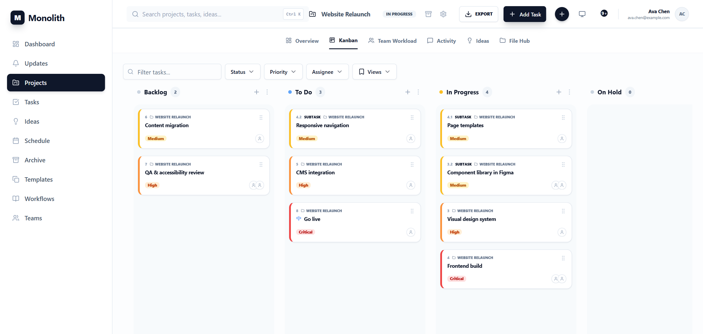
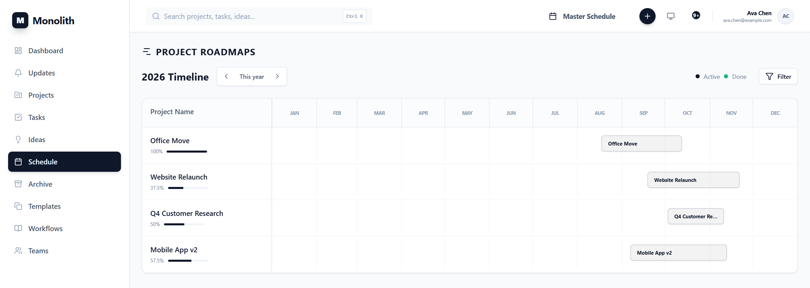
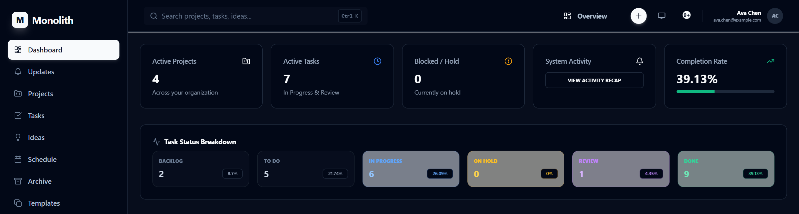

Planning views
The same tasks, seen the way each question needs: a timeline for "when", a board for "what's next", a schedule across projects, and a dashboard for "how are we doing".
Gantt chart

Reading the chart
| Element | Meaning |
|---|---|
| Bar fill | Status colour; the solid part is progress (Done 100%, In Progress 50%…), the pale track the planned span. |
| Bar border | Priority (red Critical, orange High, blue Low). Priority never colours lines. |
| Diamond | Milestone, or a task with zero duration. |
| Grey extension + purple line | The buffer up to the task's hard deadline, and the deadline itself. |
| Emerald line with caps | Actual completion date: finished before or after plan. |
| Blue arrows | Dependencies, routed through the gutters between rows. |
| Amber arrows | Conflicts: a successor starts before its predecessor allows (lag included). |
| Dashed grey lines | Parent–child structure. |
| Red line | Today. |
Working in it
- Zoom: Days, Weeks, Months, Quarters, Years.
- Drag a bar to move it, drag its ends to change start or due; the change applies at once and rolls back with a message if the server refuses it (for example a dependency conflict or a missing role).
- Critical path toggle: critical bars get a red ring, critical links glow, everything else dims. The same toggle highlights critical rows in the task table (2.5).
- Reference zones: shaded date ranges for freezes, holidays or releases, saved with the project.
- Export PNG saves a high-resolution image of the visible chart.
Kanban board

Columns are the six statuses. Dragging a card between columns changes its status (and fires the roll-up and automations); dragging within a column sets the manual order. Filters from the filter bar apply; sorting and grouping do not, the board is always by status in manual order. Each column shows its first cards and expands on demand.
My tasks
Tasks in the sidebar lists everything assigned to you across projects, as a list or a board, with the same filters, saved views and bulk actions as the project task table. Shortcut: g t.
Schedule

Three layers: Project Roadmaps (one bar per project), Discrete Deadlines (hard deadlines and milestones) and Single Tasks Progression. Step through years with the arrows, or switch to the Calendar view for a month grid of dated tasks.
Dashboard

| Widget | Shows |
|---|---|
| KPI tiles | Active projects, open tasks, completion and on-hold work. |
| Due this week | Deadlines in the next 7 days. |
| Status distribution | Open work by status. |
| Team capacity / Team workload | Planned hours per person over the next 14 days; people over capacity are flagged. |
| Risk exposure | Probability × impact of open projects and tasks. |
| Activity / Completions | Tasks completed per day over the last 12 months, and what was recently completed. |
Updates in the sidebar is the feed of recent changes across your projects.
Workload and resources
A project's Team Workload tab shows the team schedule: each member's assigned tasks over time, so overlaps and gaps are visible before they hurt. The dashboard's workload widget aggregates the same data across projects (GET /dashboard/team-workload?days=, MCP get_team_workload). Allocation is expressed through assignees, estimates and, if you need explicit percentages, a number custom field such as “Allocation %” (as in the sample project, 9.5).
Heatmap, risk and portfolio health
- Activity heatmap on a project's Overview: contributions per day over a rolling 12 months.
- Risk matrix: projects and tasks placed by risk probability × impact (1–5 each).
- Portfolio health (
GET /projects/portfolio/health, MCPget_portfolio_health): per active project a 0–100 score that loses 5 points per overdue task, 20 when on hold, 15 when the plan ends after the hard deadline and 40 when the deadline has been missed; plus a risk level and adeadline_status.